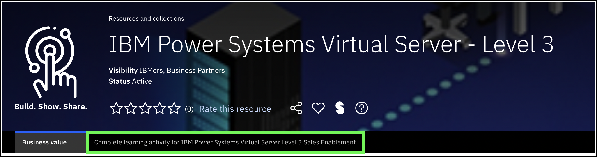

Some different markdown techniques
Referencing variables from mkdocs.yml
Here is how to reference one of the extra variables from the mkdocs.yml files. The offering.name variable is: IBM Power Virtual Server. The syntax in markdown looks like: IBM Power Virtual Server.
Links
Extern links
Links to external references are created using the Hyper Text Markup Language (HTML) href syntax. Use the target="_blank" attribute to open the link in new browser tabs or windows so users don't loose their place in the L3 demonstration guide!
- IBM: IBM Power Virtual Server Sales Foundation
- Business Partners: IBM Power Systems Virtual Server Sales Foundation
The markdown looks like this: <a href="https://learn.ibm.com/course/view.php?id=11419" target="_blank">IBM Power Systems Virtual Server Sales Foundation</a>
Internal links (references)
Internal links to pages contained in the repository use relative paths.
To link to the next chapter in this section, create a link like this.
The markdown looks like this [this](02 Callouts.md).
To link to a document in a different directory like this.
The markdown looks like this: [this](../Part 2/01 Tables.md).
Images and videos
Images can be included:
The markdown for images looks like: 
You should use a border around images to make sure the are visually separated from other content. I use SnagIt!, how about you?
You can also have videos:
The markdown for videos looks like: 
Formatting text
You can make things italic and you can make things bold, and guess what, bold and italic.
In markdown, use asterisks like this: *italic* **bold** ***bold and italic***
Numbered lists and bullets
Numbered lists are good for step by step instructions.
Bug or as works as intended?
Note, if you don't put a space after the period in you numbered lists, mkdocs treats it differently and the numbers appear on the same line like this: 1. 2.
Bullets are done like this.
- bullet 1
- bullet 2
- and sub-bullets 1
- and 2
Bug or as works as intended? Either way, 4 is the magic number!
For sub bullets and other areas where you want things indented, you need to use 4 spaces for those items. In the bullet example above, the sub bullets must have 4 spaces before the -.
Likewise in the list and image example below, the image definition and paragraph need to be preceded by 4 spaces.
And the Python-Markdown documentation notes:
The syntax rules clearly state that when a list item consists of multiple paragraphs, “each subsequent paragraph in a list item must be indented by either 4 spaces or one tab” (emphasis added). However, many implementations do not enforce this rule and allow less than 4 spaces of indentation. The implementers of Python-Markdown consider it a bug to not enforce this rule.
The preview extensions that we added in VSC don't enforce the 4 rule, so sometimes what you see there is not what you get when you publish to GitHub pages. Thus, it is important to review the published content and not just the source.
Recall from Center of Excellence style guides, images associated with a numbered item should be indented like the one below.
-
Look at this image.
Notice how my images lines up with this line of text and the numbered item above. You need to use 4 spaces before the image definition to make things line up properly.

The markdown to embed an image looks like this:

Automatic numbering in Visual Studio Code (VSC)
When editing a number item, double check that the numbered item does not change. Depending on the changes made, it has been observed the VSC will reset the numbered item to 1. Always double check that numbered lists are correct when saving the updated document.